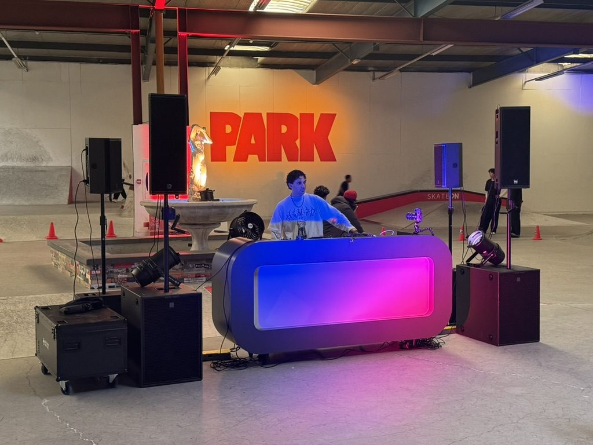
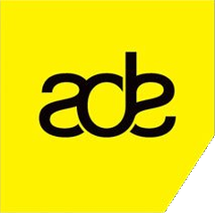
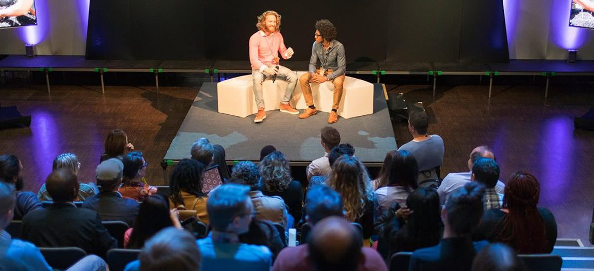
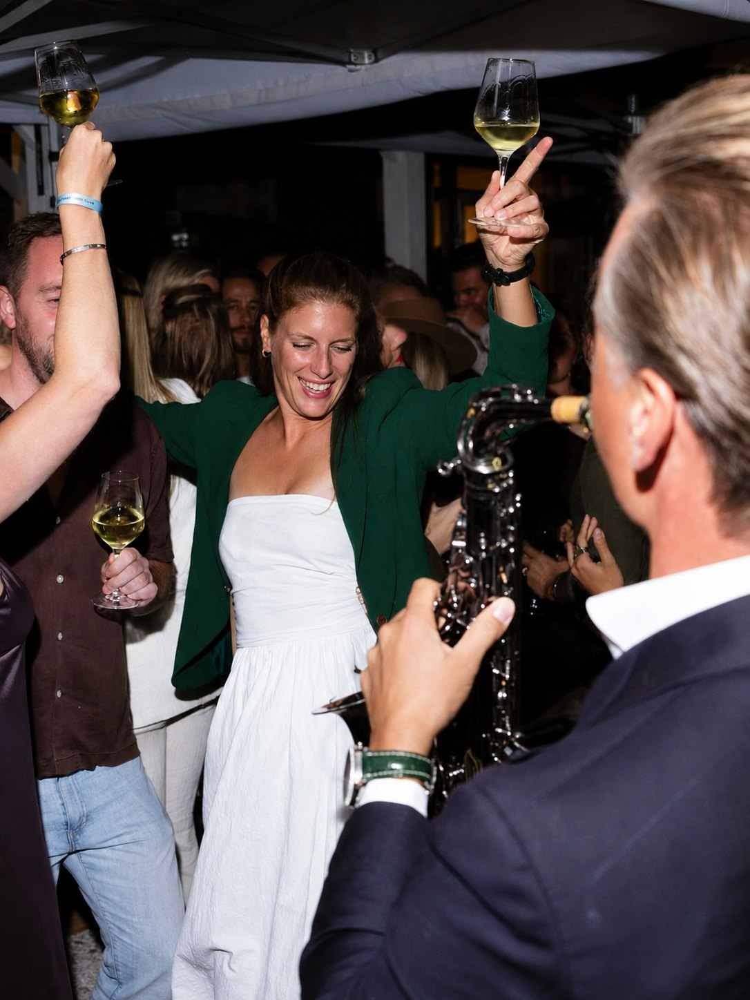
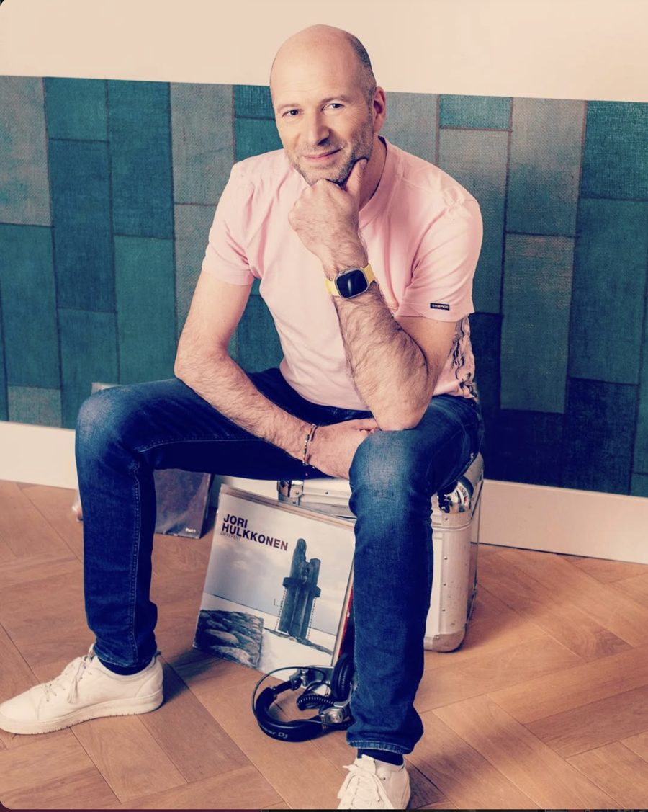
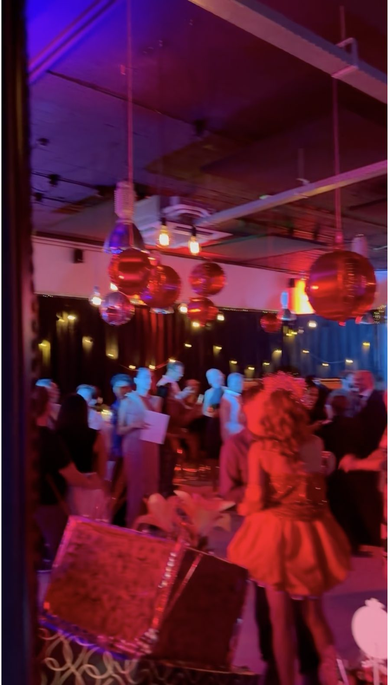

Bekijk de case →Dance eventsBijzondere eventlocaties
Transformatie: van skatehal tot dansvloer
Eén avond omgebouwd voor een pop-upevent, met beperkte soundcheck nodig.


Bekijk de case →Dance eventsBijzondere eventlocaties
Eén avond omgebouwd voor een pop-upevent, met beperkte soundcheck nodig.
 Bekijk de case →
Bekijk de case →Van productverlichting overdag naar een warme dansvloer 's avonds.

Bekijk de case →
Bekijk de case →Een luxe tuinfeest midden in Oud-Zuid, zonder overlast voor de buurt.

Bekijk de case →Dj-sets voor corporate events, skylounges en cocktailbars: van speakeasy tot dansvloer.
 Bekijk de case →
Bekijk de case →Twee uur soulful house, deephouse, afro, latin, disco en houseclassics.
 Bekijk de case →
Bekijk de case →Systeemadvies voor een licht- en geluidsverhuurbedrijf.

Bekijk de case →Een persoonlijk feest voor vrienden en relaties, met meerdere dj's.